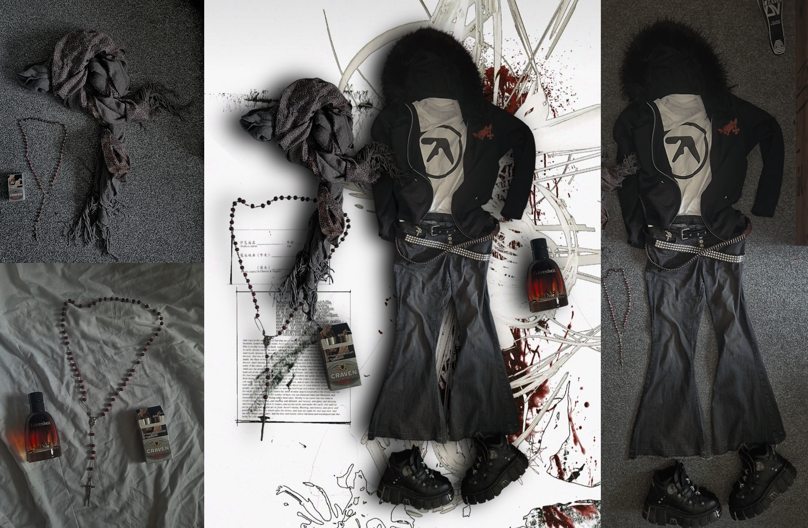
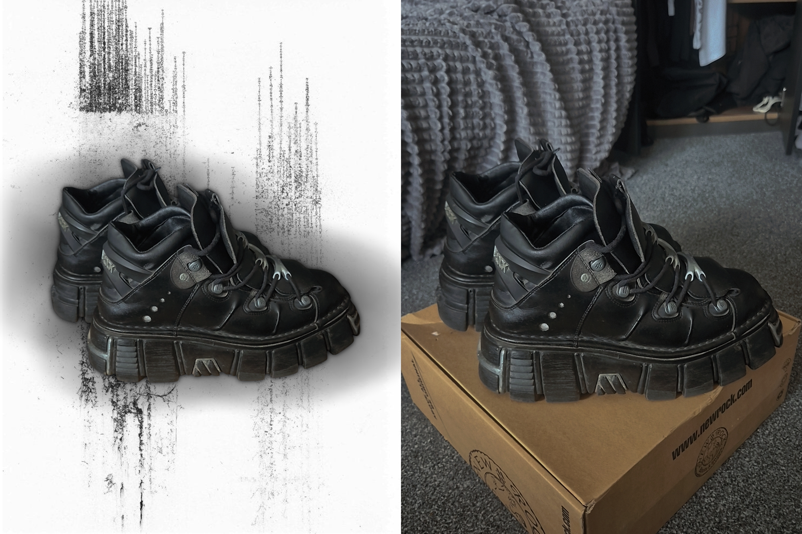
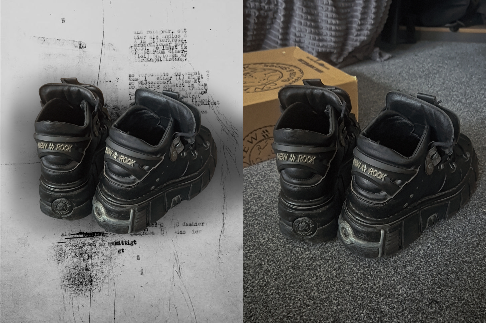
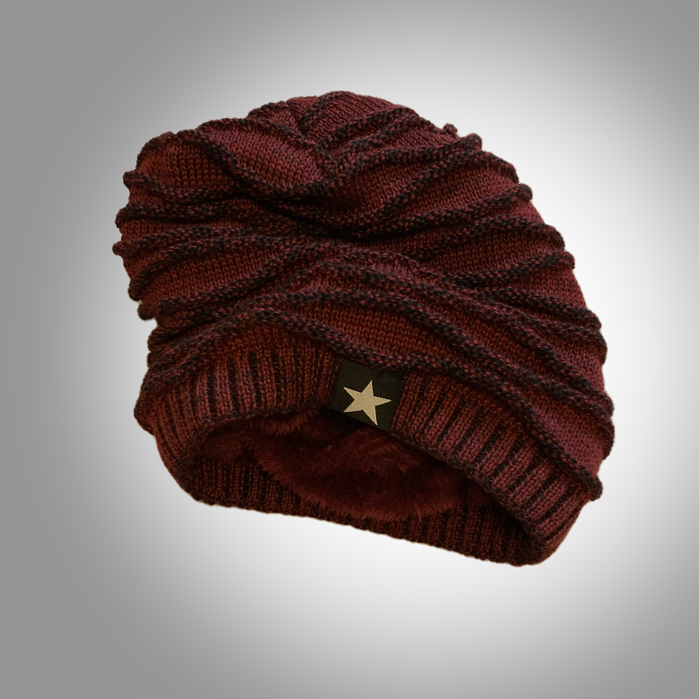

Vybrané práce, 2023–2026

Jeden outfit, sedm inzerátů
Vyfoceno na Samsung Galaxy S24, vytvořeno pro prodej na Grailed, Vinted a Depop. Kompletní postprodukce a tvorba pozadí v Paint.NET.


Web spimzdrave.eu a propagační leták
Klientská práce — web postavený na Shoptetu, grafická úprava v HTML a CSS. Návrh banneru e-shopu a letáku z produktových fotek dodaných značkou Medical-PUR.



Before & After — Postprodukce outfitu
Porovnání surových fotografií z mobilu a finální kompozice s grafikou pozadí. Pomocí šipek lze přepínat mezi původními fotkami a výslednou postprodukcí v Paint.NET.





Komerční produktová fotografie & packshoty
Příprava produktových fotografií pro online prodej a e-shopový katalog. Precizní vymaskování členitých textur denimu, pletenin a potisků, retušování a sjednocení na neutrální studiové pozadí v Paint.NET.

Plakát hudební akce & digitální ilustrace
Vizuální koncept a plakát pro hudební akci (nu-metal, jungle, DnB, rap). Kompozice kombinující kyberpunkovou typografii, 3D bio-mechanické prvky a ilustrovaný terminál vytvořený v programu Krita.
Hledáš něco, co tu není? Napiš mi o kompletní nabídce.